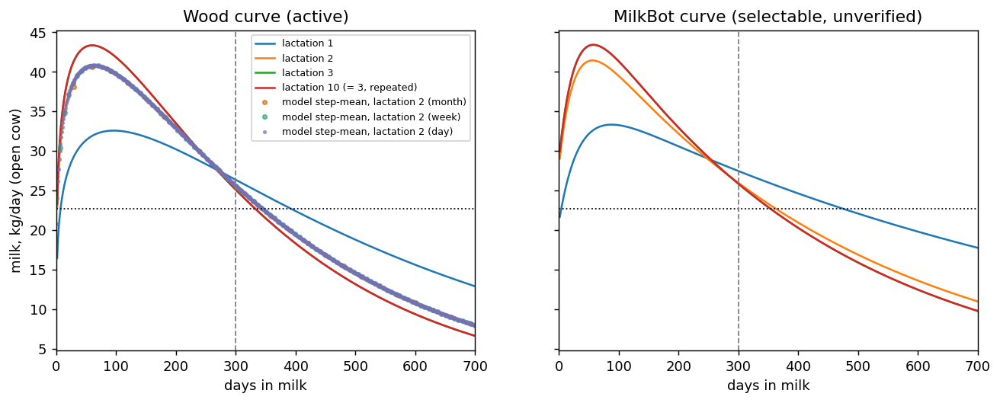
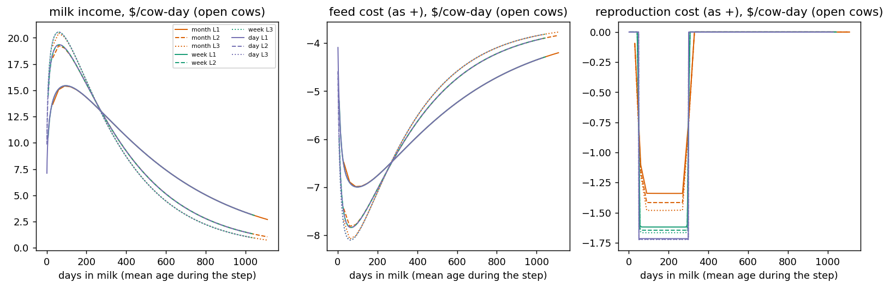
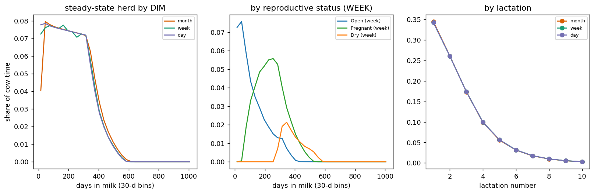

cowmrp tutorial
Using the cowmrp package
Everything here is run from Python (or the runner scripts in the repository) and describes the model as it is: nothing on this page introduces new biology or economics.
1. What the package is
cowmrp contains a domain-free Markov reward process engine (cowmrp.mrp) and two animal domains built on it: the cow
(state (lactation, dim, dp): lactation number, days in milk, days pregnant, in model-step units) and the youngstock chain (calf, heifer, first calving).
A Markov reward process is a list of states, the probability of moving from each state to each other state in one step, and a reward earned in each state.
From these you get the expected value of a cow, how a herd is distributed over time, and what a replacement is worth.

The layers depend in one direction only: cowmrp.mrp (engine) ← cowmrp.domain, cowmrp.model (build and solve any domain) ←
cowmrp.domains.cow / youngstock ← the runners/ scripts. The engine imports no animal; a check (runners/_shared/checks/verify_mrp_boundary.py) enforces it.
2. Install
pip install cowmrp # engine + domains
pip install "cowmrp[plot]" # + matplotlib and plotly for dashboards and figures
pip install -e ".[dev,plot,parquet]" # from a clone of the repository; Python 3.10 or newerBuild the model and look at it:
from cowmrp.model import build_model
model = build_model("cow")
print(len(model.states), "states") # {{COW_STATES}} at month resolution
print(model.states.head())3. Your farm data
One row per cow, described in real days. Health and DNB flags are not state variables and are not used.
| Column | Meaning |
|---|---|
cow_id | optional and unique; 1..n when absent |
lactation | 1 to 10 |
dim_days | days in milk, 0 or more |
dp_days | days pregnant; 0 for an open cow (the default) |
state_id | alternative: the model state of the cow (when given with the days, they must agree) |
uim, up | alternative to the days: the model's step indices, as generate_herd writes them |
from cowmrp.data import example_herd_path, example_raw_herd_path
from cowmrp.domains.cow.farm import load_herd
herd = load_herd(example_raw_herd_path(), model) # or a DataFrame, or "my_herd.csv"
print(herd[["cow_id", "state_id", "lactation", "dim_days", "dp_days", "status"]].head())A cow is mapped to a state with the rule the original generator used (dim_step_of_days, dp_step_of_days, then the matching (lactation, dim, dp) state);
load_herd adds validation only. Every problem is reported at once with its row and cow_id: missing or non-numeric values, lactation outside 1-10, negative days,
duplicate cow_id, a combination the model has no state for (with the nearest valid states), a state_id outside the table. A herd file made under another
time resolution is refused. Errors raise HerdDataError.
example_herd_path() is in the model schema, example_raw_herd_path() is the same cows as a farmer would export them.
Make another with generate_herd(model, "equilibrium", n_cows, seed) (also modes mix and exact).4. One cow, or cow A against cow B
Project individual cows forward and compare them: rewards and distributions over time, in days.
from cowmrp.domains.cow.projection import compare_cows
scenarios = [
dict(label="open", time_unit="month", lactation=2, dim_days=150, dp_days=0),
dict(label="pregnant", time_unit="month", lactation=2, dim_days=150, dp_days=60),
]
results = compare_cows(scenarios, years=2) # a dict {scenario index: result}; n_trajectories=100 adds Monte Carlo bands
for i, sc in enumerate(scenarios):
print(sc["label"], round(results[i]["finite_horizon_value"])) # expected 2-year value, USDScenarios may use different time resolutions: those other than the current one run in worker processes. Figures and tables: cowmrp.viz.projection
(projection_figures, projection_tables), or the script runners/cow/projection.py (edit SCENARIOS at the top).

5. Keep or cull
Three quantities are kept apart: keep (expected future value of the cow, her future replacement costs included), replace (the value of a heifer bought now, after the cost of one replacement) and their difference, the break-even sale value. Culling and replacing her now beats keeping her only if the sale brings more than that value.
from cowmrp.domains.cow.keepcull import keep_cull_table, keep_cull_summary
table = keep_cull_table(herd, model, years=(1, 3, 5), offer=900) # USD offered per cow
print(table.nsmallest(5, "value_3y")) # weakest cows first
print(keep_cull_summary(table, (1, 3, 5)))Without offer the table only ranks the cows. With it, decision_<N>y is CULL when the offer exceeds the break-even value, and stable says whether the call
is the same at every horizon. detail=True adds keep_<N>y and replace_<N>y. The salvage value of a sale is not credited in the model's own comparison
(a documented limitation of the model) and no sale price is invented. The same numbers come out of replacement_comparison for a single cow.
To see the call built step by step, with the sale of the cow now as its own column (an estimate, or the offer you type), write the Excel accounting workbook: python runners/cow/farm/keepcull.py --excel.
6. Whole-farm projection
from cowmrp.domains.cow.farm import project_herd
from cowmrp.viz.farm import write_farm_outputs
result = project_herd(herd, model, mode="expected", steps=24) # 24 steps = 24 months at month resolution
print(result["distribution_summary"].query("grouper == 'status'"))
write_farm_outputs(result, "farm_results")The herd is carried forward with the model's own transition matrix and summarised by status (open / pregnant / dry), lactation, DIM stage and month in milk. Cows that have never been replaced
are tracked separately from cows that entered through the replacement state. result["values"] holds per-cow values (V, V_keep,
replacement_value, pregnancy_value); pass values=False to skip them. write_farm_outputs writes the CSV tables and two dashboards
(dashboard.html, static; dashboard_plotly.html, interactive). The complete script is examples/whole_farm_example.py.

7. Expected, stochastic and Monte Carlo
mode | What it computes | Use it for |
|---|---|---|
expected (default) | The exact distribution of the herd over states after each step. Deterministic and fast | Planning, scenario comparison, dashboards |
stochastic | One sampled path per cow (seed) | One plausible herd history; result["trajectory"] |
monte_carlo | Many sampled herds (sims): mean, standard deviation, 5th and 95th percentile | When the spread matters, mainly small herds; result["monte_carlo"] |
For a large herd the sampled modes agree with expected on the mean and cost far more time, so nothing in the package runs them unless you select them.
8. Time resolution
The model steps in month (30 d, the default), week (7 d) or day (1 d). Set it before Python starts and keep it for the whole process:
COW_TIME_UNIT=week python my_script.py # PowerShell: $env:COW_TIME_UNIT="week"; python my_script.pyDim and dp are model-step units, not calendar days; durations such as gestation stay in real days. Probabilities, rewards, discounting and exported labels all follow the one setting. A herd file made at one resolution is refused at another (state ids are not comparable). The day resolution has about 2.4 million transitions: use it on purpose.
9. Environmental outputs
The physical quantities (enteric and manure methane, N2O, nitrogen balance, CO2) are always computed from the animal's state by cowmrp.domains.cow.rewards.environment.compute_environment
and do not depend on any price. The monetary environmental rewards are separate specs, switched off by default (ENABLE_REWARD_* flags in parameters.py), and enter the economic total only when enabled.
10. Your own domain
A domain is a package with parameters, states (build_<name>_states), probabilities (compute_probabilities), transitions
(compute_transitions) and optionally rewards (compute_rewards). cowmrp.domain.validate_domain checks the interface;
build_model("your_package") builds it with the same engine. python runners/_shared/new_domain.py <name> creates the stubs and a runner module.
11. Checks and tests
pytest # fast suite, about 1 minute: month and week, expected distribution
pytest -m slow # day resolution and weekly Monte Carlo parity (about 13 minutes)
pytest -m install # builds the wheel and installs it in a clean virtual environment
python runners/cow/checks/verify_farm.py # the farm layer; more verify_* scripts in runners/*/checks/The tests compare the package with saved results of the original runners (tests/baselines/); tests/README.md lists them and the known pre-existing failures.
12. Where things live
| Path | What |
|---|---|
src/cowmrp/mrp/ | domain-free engine |
src/cowmrp/model.py, domain.py | build and solve any domain; the domain interface |
src/cowmrp/domains/cow/ | states, probabilities, rewards, farm.py, keepcull.py, projection.py |
src/cowmrp/viz/ | projection figures, farm dashboards |
runners/ | scripts that use the package; outputs under runners/<module>/outputs/ |
examples/ | four runnable scripts: cow_comparison_example.py, keep_cull_example.py, whole_farm_example.py, youngstock_example.py |
The file guide describes every file and the API reference every function.